铜质美人鱼——1981年
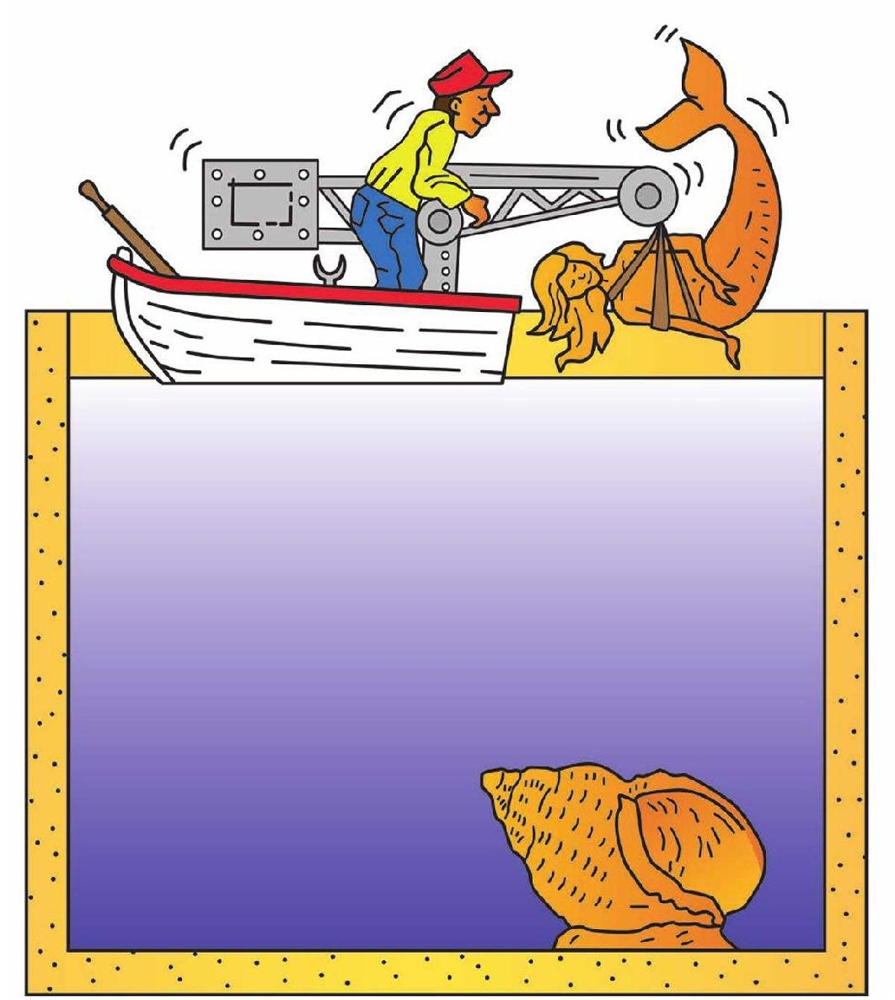
如图所示，安杰洛在他的小船上，准备将一个实心的铜质美人鱼放入一个巨大的水箱里。当这个美人鱼雕像被成功地放入水箱的底部时，请问水箱里的水位是会上升、下降还是保持原先的水位呢？
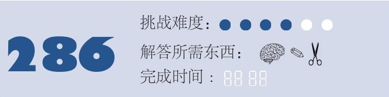
斯科特·金（1955—）
斯科特·金是美国的一位谜题与电脑游戏的设计师、艺术家与作家。他为《科学美国人》与《游戏》杂志创作了数百个游戏。他是世界上最具创造性与想象力的谜题发明家。金1955年生于华盛顿，后就读于斯坦福大学，获得音乐学士学位，在唐纳德·克努特的指导下获得了电脑与图形设计的博士学位。
他是对称学领域的权威之一。1981年，他创作了一本名为《倒置》（Inversions）的书籍，书里的单词可以用多种方式去进行阅读（如图）。他的这本书可以说是这一领域内的杰作。
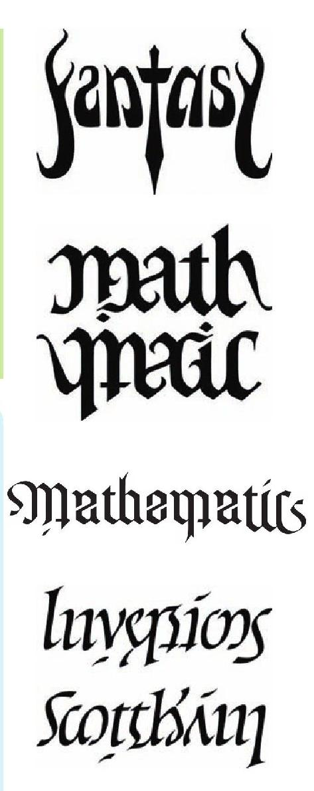
——艾萨克·阿西莫夫，科幻小说家
——道格拉斯·霍夫施塔特，普利策奖获得者
——马丁·加德纳，《科学美国人》杂志
藤村幸三郎的三角形问题——1983年
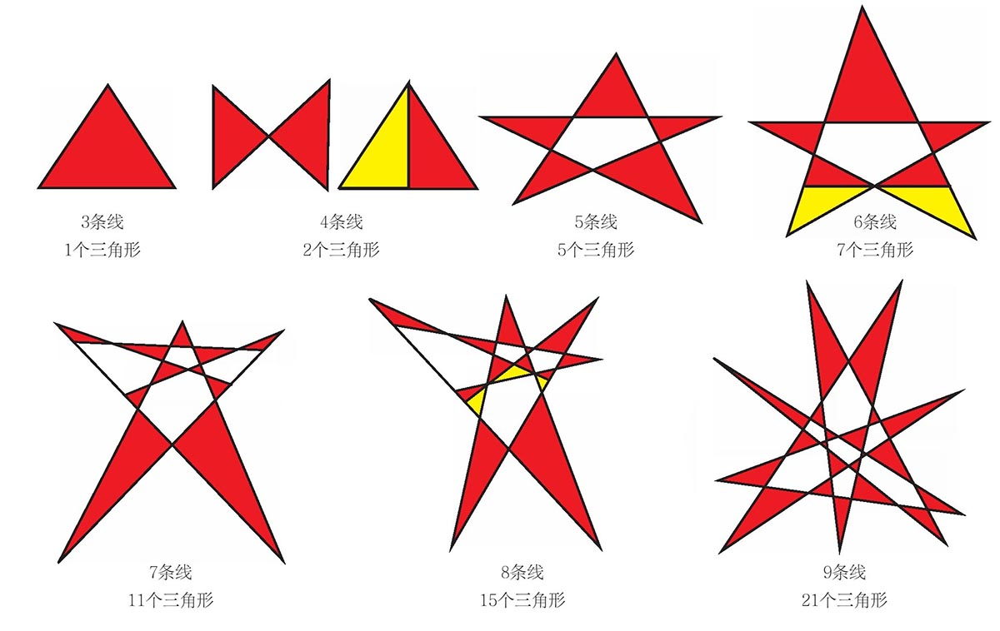
藤村幸三郎三角形问题是藤村幸三郎（Kobon Fujimura）这位日本教师与谜题发明家在1983年首先提出来的。
这个问题是这样阐述的：在一个平面上，用n条线段，最多能够创造出多少个不重叠的三角形呢？
当n=3、4、5与6时，三角形的最大数量分别是1、2、5、7，而在7、8、9条线段的情况下，不重叠三角形的最大数量分别是11、15与21。
田村三郎（Saburo Tamura）证明了最大的整数不会超过k（k-2）/3，这为用k条线形成的最大数量的不重叠三角形提供了一个数值上限。比方说，当k=4时，这就意味着4×（4-2）/3就是最大的整数，因此不重叠三角形的数量就是2。
2007年，约翰纳斯·巴德尔与吉利斯·克莱门特发现了一个更为精确的数值上限，他们对田村三郎的数值上限进行证明时，发现当k除以6的余数为0或2时，此k值给出的上限更小。因此，在这种情况下，最大数量的三角形要比田村三郎提出的数值上限还要少一个。
完美的解答（藤村幸三郎三角形的解答方法需要最多数量的三角形）存在于k=3，4，5，6，7，8，9，13，15与17的时候。
当k=10，11与12的时候，已知的最佳解答是比数值上限少一个。
艾德·佩格在他的数学谜题网站上报道了这个问题所取得的进展，其中就包括铃木敏孝（Toshitaka Suzuki）提出的15条线与65个三角形的解答方法，你可以在下一页的内容里看到。
要是我们做出限制，要求这些线必须形成一条连续的断线，那么藤村幸三郎三角形又会呈现出什么样的形状呢？
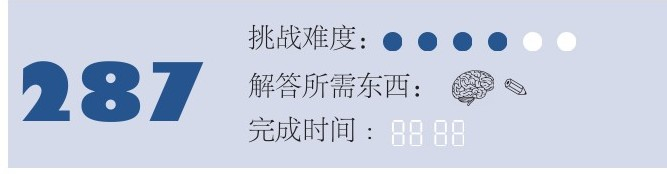
——G. K.切斯特顿
铃木的解答方法
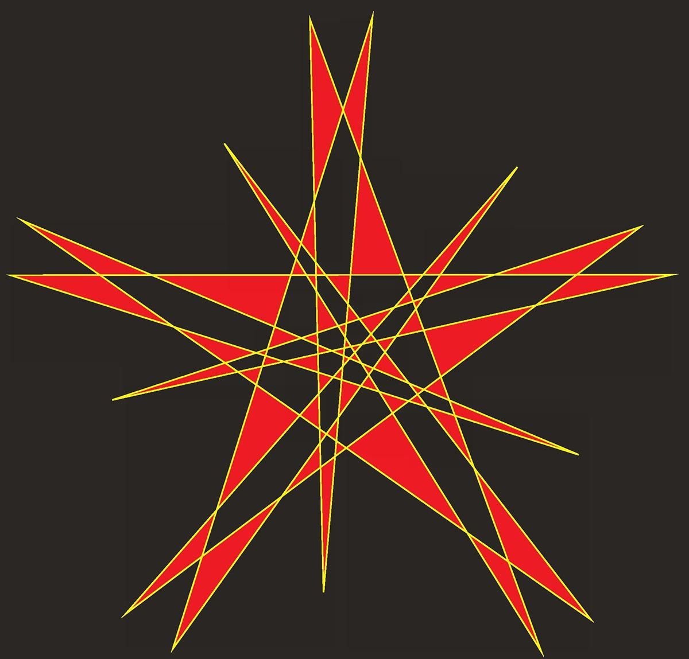
铃木敏孝提出的15条线与65个三角形是极具美感的，这个方法是次优解答。到目前为止，最佳解答就是17条线与85个三角形。
俄罗斯方块——1984年
俄罗斯方块是20世纪80年代由苏联的阿列克谢·帕基特诺夫首先设计出来的。它是第一款从苏联输出到美国的游戏软件，是专门为Commodore 64型电脑与IBM电脑定制的。俄罗斯方块这款游戏普遍使用四格拼版，这是由四个面组成的多联骨牌的一种特殊类型。从1907年开始，多联骨牌就在流行的拼图游戏里得到应用了，尽管如此，多联骨牌这个名字到了1953年才被数学家所罗门·W.哥隆命名。
《电子游戏月刊》在对100款最受欢迎的游戏进行排名时，就将俄罗斯方块称为“史上最受欢迎的电脑游戏”。2010年1月，俄罗斯方块光是在手机上的付费下载次数就已经超过了一亿次。
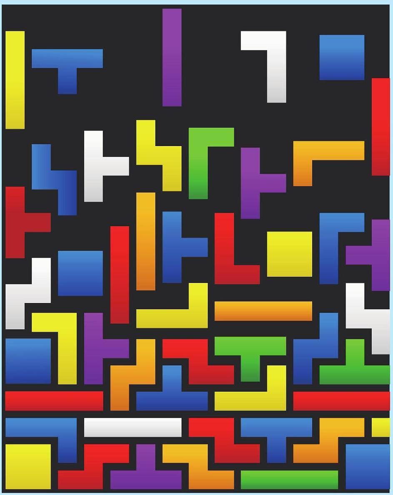
巨大的俄罗斯方块
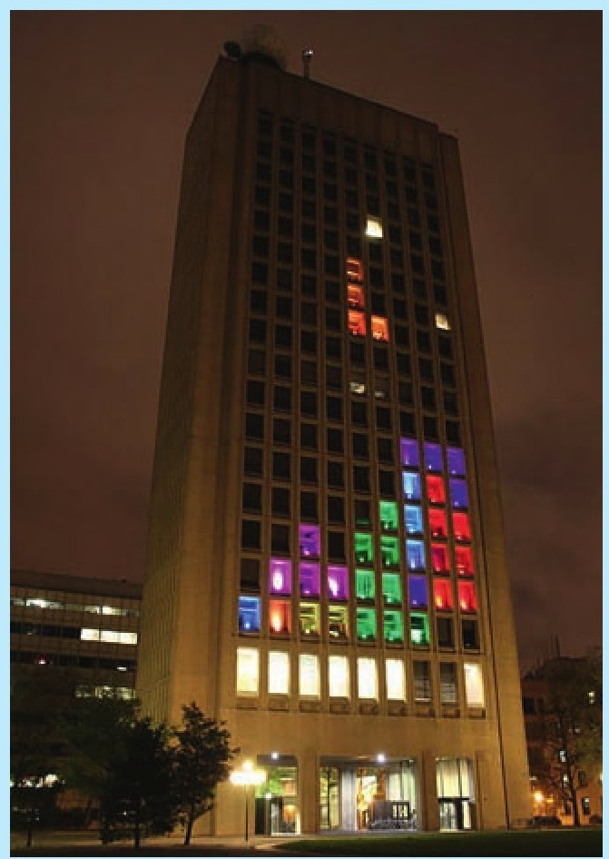
2012年，麻省理工学院成功地将一栋绿色建筑变成一个可玩的巨大俄罗斯方块游戏，这个游戏在离这栋建筑一段合适的距离后方能观察到，玩的时候要通过无线电控制平台来进行操作。
握手（一）
在董事会上，一共有17位董事会成员，他们每个人都要与其他人握手，但有4位董事会成员彼此没有握手。请问这些人一共进行了多少次握手呢？
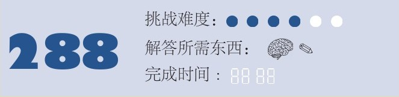
握手（二）
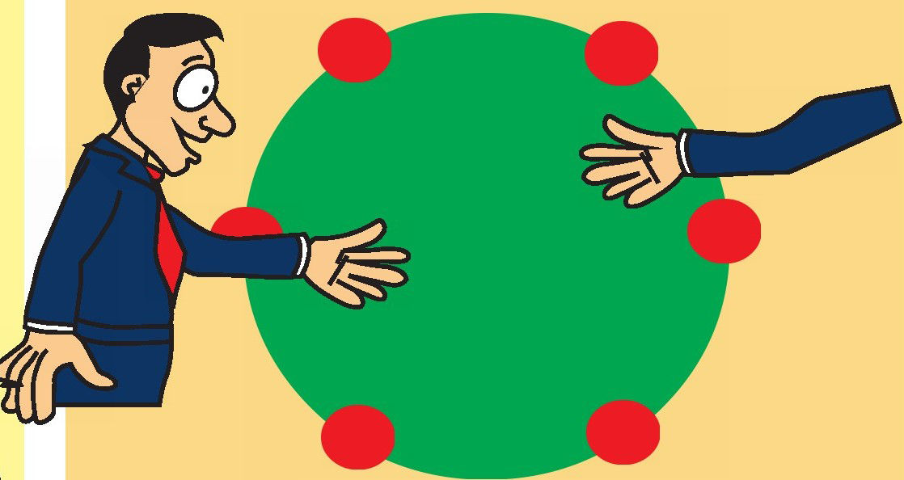
6个人坐在一张圆桌前，每个人都要同时与另一个人握手，不能出现交叉握手的情况，请问，一共有多少种可能的握手组合呢？
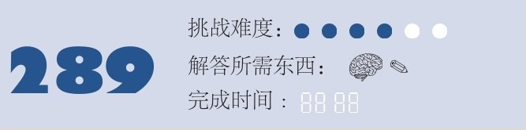
握手聚会
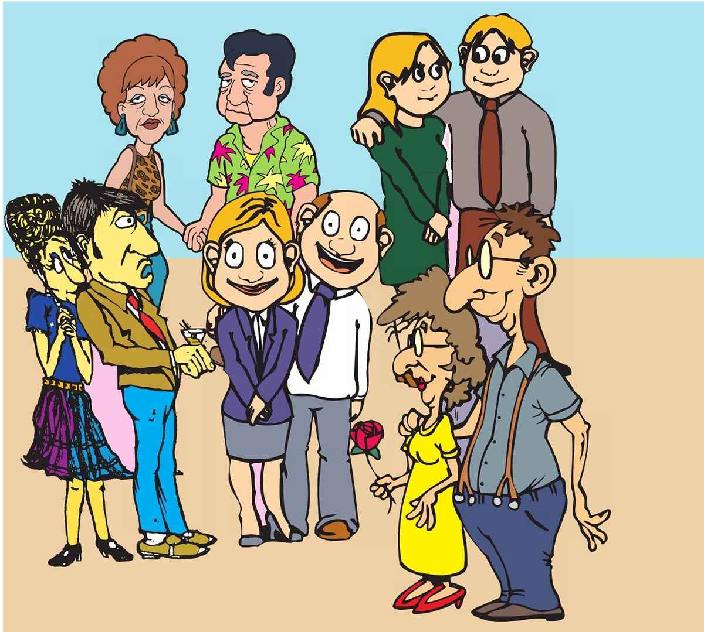
我与我的妻子邀请了四对已婚夫妇参加我们的乔迁庆祝聚会。谁也不能与自己的妻子或丈夫握手，而且任何夫妻与同一人握手的次数都不能超过一次。
在客人离开之前，我询问每个人一共握了多少次手。我得到了下面的回答：8，7，6，5，3，2，1与0。请问，我的妻子与多少人握过手呢？
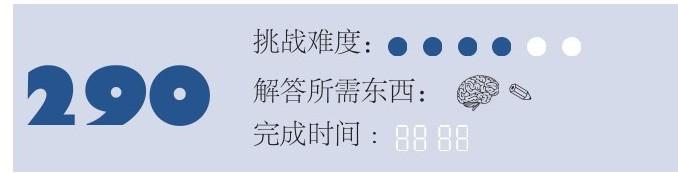
北极探险者——1986年
有一个经典谜题是这样的：一位探险者随机选择一个地方出发，他向南走了1千米，然后转身朝东走了1千米，接着再次转身，向北走了1千米，发现自己还停留在出发点，面对着一只熊。这只熊有怎样的颜色呢？通常的回答是“白色”。但问题是，北极是他这趟旅程唯一可能的出发点吗？
哈里·恩格的魔方——1990年
哈里·恩格生于1932年，卒于1996年。他是一名老师、教育顾问、发明家、魔术师，也是我的一位亲密朋友。他所做的一切事情都是为了引导人思考。多年来，他就是一直这样教导我的。
哈里因他研发的瓶子而闻名于世。在他的一生里，据说制造了大约600种这样的“不可能的瓶子”。这些瓶子在制造方面并没有任何取巧，都是用结结实实的玻璃做成的。瓶子里装的所有东西都是通过瓶口进入的。我们都知道哈里·恩格发明了一种能够拆分的特殊装置，他将这种装置的各个部件放入一个瓶子里，接着在瓶子内进行组装。这能够让金属物体留在瓶子里，被弯曲或拉直。一旦完成了这一步，那么这个装置就能够拆分开来，从瓶子里取出。
在魔术圈里，哈里·恩格也是一位传奇人物。他本人从不表演魔术。是的，他的魔术来自一个完全不同的领域。他呈现出来的艺术并不是靠舞台幻觉、各种花招或魔术道具所能完成的，更不是靠所谓的唯心主义去实现的。哈里的魔术完全就是思考与创造力方面的纯粹艺术。“我们人生的力量以及我们赖以生存的能量，都源于我们的心智。”对哈里·恩格来说，不可能就是他的生活方式。“所谓的不可能，不过是需要我们多花点时间罢了。”他就是这样说的，显然他说得没错。
——哈里·恩格
不可能的折叠游戏
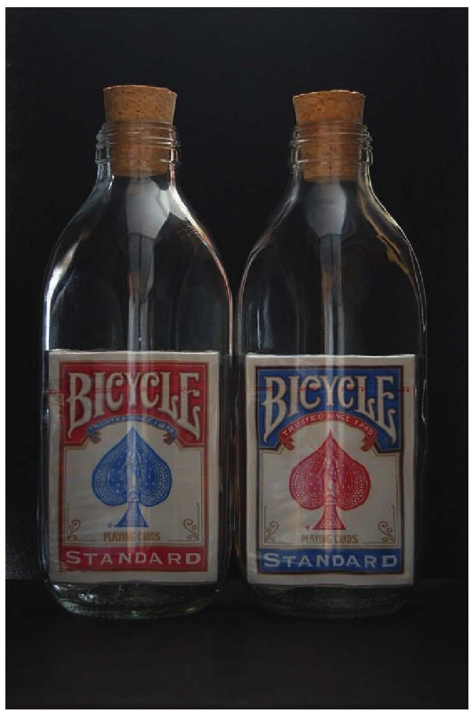
这个游戏的目的就是沿着折线折叠这张纸，形成一个大的八边形，并穿过一个正方形环，如图所示。你会怎么做呢？
这个游戏是哈里·恩格发明的，并在1994年6月11日举办的国际谜题大会上获得了纪念奖章。
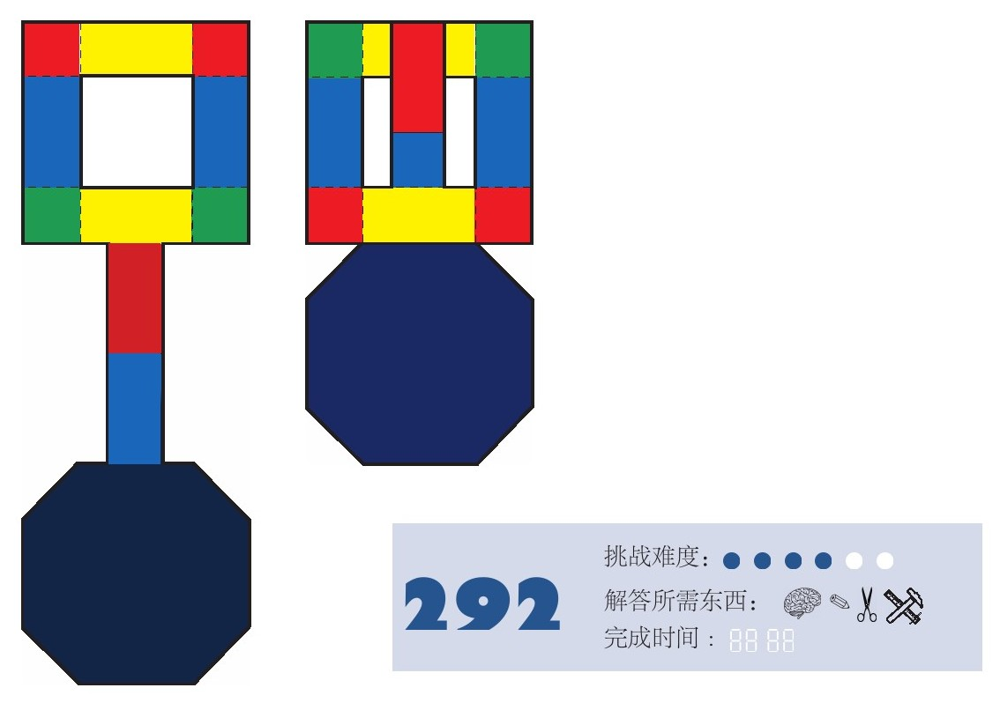
蒙提·霍尔问题——1990年
这个著名的违反直觉的问题通常被称为蒙提·霍尔问题，它是以主持《让我们做个交易》这一美国游戏节目的主持人蒙提·霍尔的名字命名的。
霍尔以他擅长诱惑参赛选手放弃门后面隐藏的那份神秘大奖而闻名。马丁·加德纳在1959年10月份的专栏里提出了这个问题。
《展示杂志》的专栏作家玛丽莲·沃斯·莎凡特是对这个问题有着深入研究的著名人士，这个问题涉及三扇门，其中一扇门的背后隐藏着一辆豪华轿车。她同时还为这一问题提供了答案。她给予的答案招致成千上万封表达怀疑与指责的信件，其中有1000多封信件是拥有博士学位的人寄来的，他们中很多人都是数学家。千万不要对此感到惊讶，这个问题真的是一个违反直觉的悖论。
即便是我那著名的朋友保罗·埃尔德什，这位20世纪最著名的数学家，一开始也用怀疑的态度去面对这个问题。他的朋友费了好大劲儿才改变了他一开始的态度。在一位同事利用一台电脑模拟了数百次实验之后，埃尔德什才承认自己之前的想法是错误的。
——理查德·费恩曼
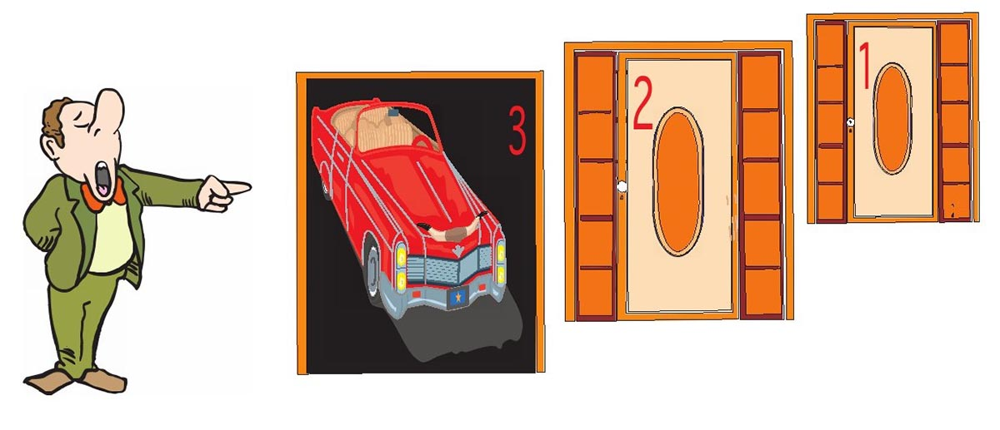
蒙提·霍尔的问题：游戏的规则
你获邀参加一次游戏节目，这个游戏节目让你有机会赢得一辆豪华轿车。这辆车就在三扇门之中一扇的后面，另外两扇门背后各有一只山羊。你随机地选择一扇紧闭的大门（第一步）。此时，你能够选择到那扇背后有豪华轿车的门的概率是三分之一，也就是大约33%。
这时主持人（他当然知道那辆车在哪一扇门背后）就必须履行他的职责：他会打开并排除一扇没被选择的大门，展现出背后隐藏的是一只山羊（至少有一扇没被选择的大门背后有山羊）。
关键的时刻来了，主持人问你是否要改变你的选择，这的确是个问题（这也是你面临的一个困境）。改变选择是否会改变最初的成功概率呢？玛丽莲的回答是一定要改变最初的选择。
下一页的图形会展现出各种可能的情况。第一行展现的是三种可能的选择。第二行（第二步）展现的是，如果你坚持不改所能得到的结果。第三行展现的是你改变所能得到的结果。如果你决定改变（第三步），你将看到——你成功的概率将会翻倍——从原先的三分之一升到了三分之二。很多人可能仍然不相信，这也是可以理解的。一般的常识通常会告诉我们，改变选择并不会造成任何的差异。两扇门，一个大奖，跟投掷硬币的概率差不多。但是，玛丽莲的说法是正确的。
为了让你明白玛丽莲的说法是正确的，你可以看看蒙提·霍尔问题（二），这个问题涉及十扇大门，你需要像保罗·埃尔德什那样进行尝试。
最后，请记住，这只是条件概率的一个案例：在某件事情已经发生的情况下，另外一件事情发生的概率。
蒙提·霍尔的问题（二）
对那些依然对此持怀疑态度的读者，我们提供了这个问题的另一个版本。这个版本的问题涉及十扇门，这能够帮助许多人消除在面对第一个问题时所产生的诸多思维误区。
游戏规则与之前一样，同样是在这些门背后隐藏着一辆豪华轿车与九只山羊。你可以选择决定哪一扇门不被打开。主持人会打开另外八扇门，发现这些门背后都是山羊。
除了你选择不打开的大门之外，主持人还留着一扇门没有打开。现在，你可以改变你的选择。你会改吗？如果你选择不改，而是坚持自己之前的选择，那么你赢得那辆豪华轿车的概率有多少呢？如果你选择打开，你获胜的概率又有多大呢？
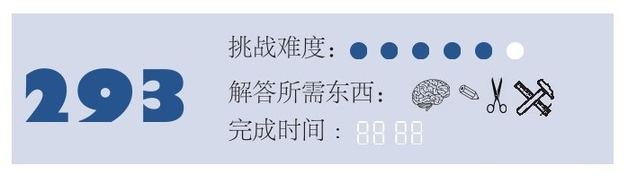
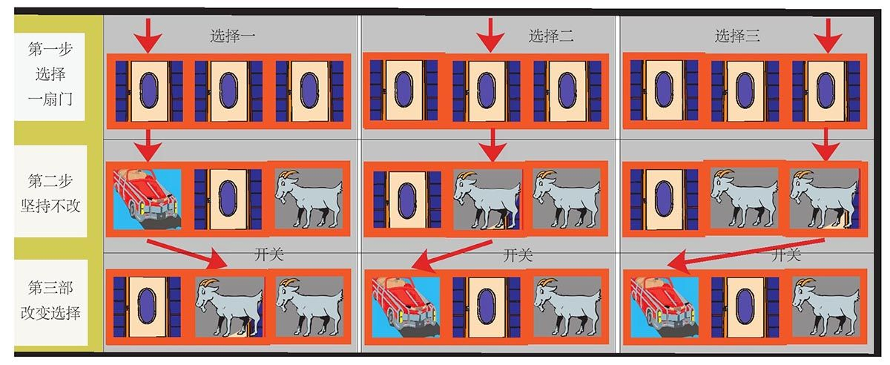
请注意，在第一栏里，主持人必须留下一扇没有被选手选择的大门，即便他可以打开并排除两扇门。在第二栏与第三栏里，主持人只有一扇门可以打开并排除。在第三步，当选手决定改变选择后，本来会赢（第一栏）现在变成了输。本来会输（第二栏与第三栏）变成了赢。
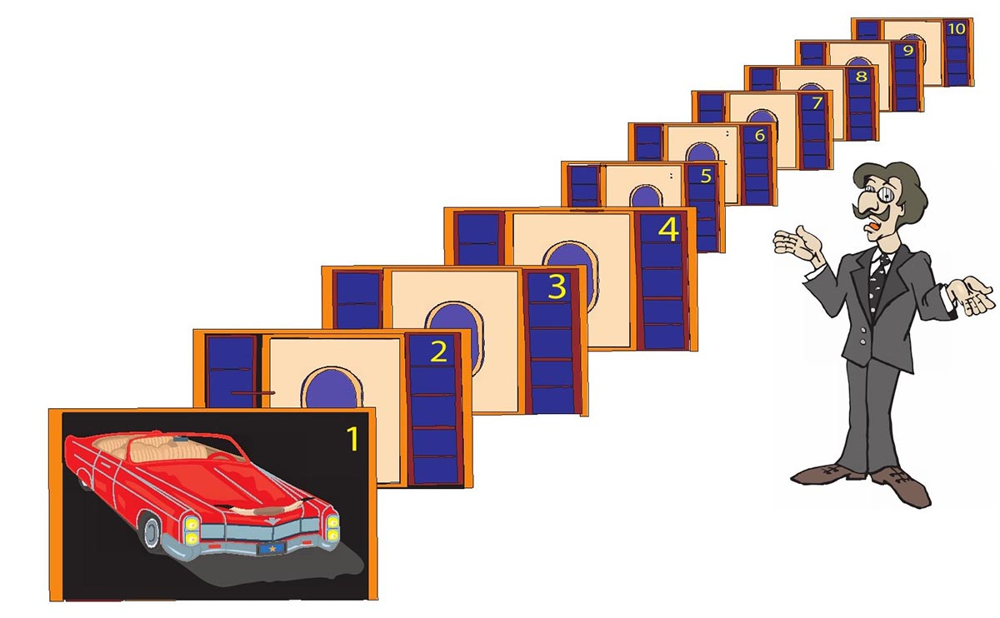
德拉库拉的棺材——1991年
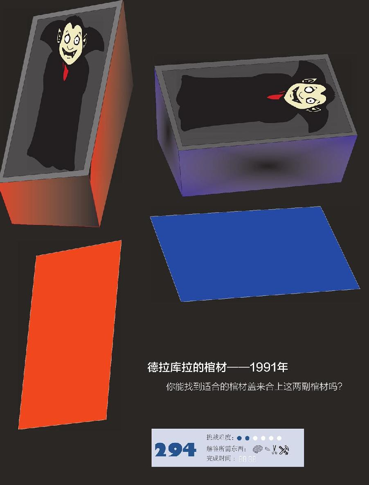
你能找到适合的棺材盖来合上这两副棺材吗？
植树问题——1991年
将n个点摆放在若干条直线上，使每条线上都有k个点，这个问题通常被称为“植树问题”或“果园问题”，这是一组比较难的问题。通常来说，这个题的目标就是要让直线的数量r最大。有趣的是，解答这个问题的一般性方法到现在还没有找到，即便是在k=3与k=4的情况下，找到突破性的解答方法依然需要时间。
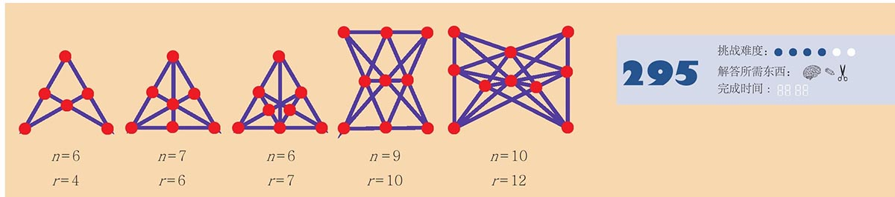
植树问题（一）
上面给出了k=3（3个点在一条直线上）时，从n=6到n=10时的最大解。你能找到当n=11，而r=16时的最大解吗？
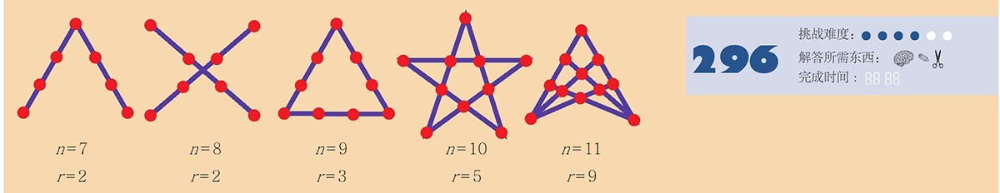
植树问题（二）
当k=4（4个点在一条直线上），这个问题就变得更加复杂了。当n从7到11时，最大解如图所示。你能找到当n=12且r=7时的最大解吗？
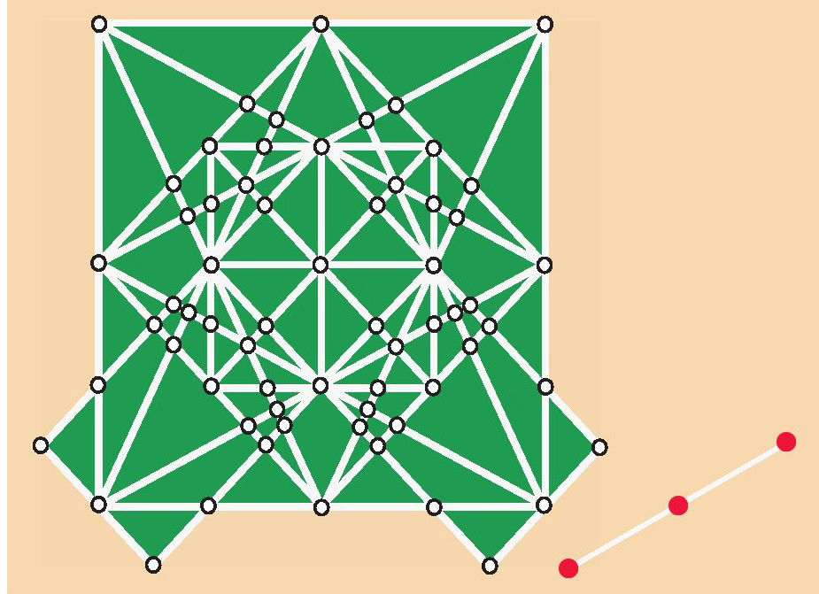
植树问题（三）
将红色的筹码放在白色的圆圈上，要求在每一条直线上都有三个红色的筹码。你需要多少个红色的筹码呢？
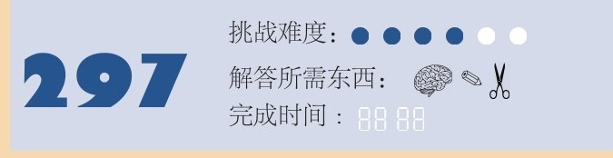
625个单位的纸风车三角形
你能找到五个125单位的纸风车三角形所形成的大三角形吗？
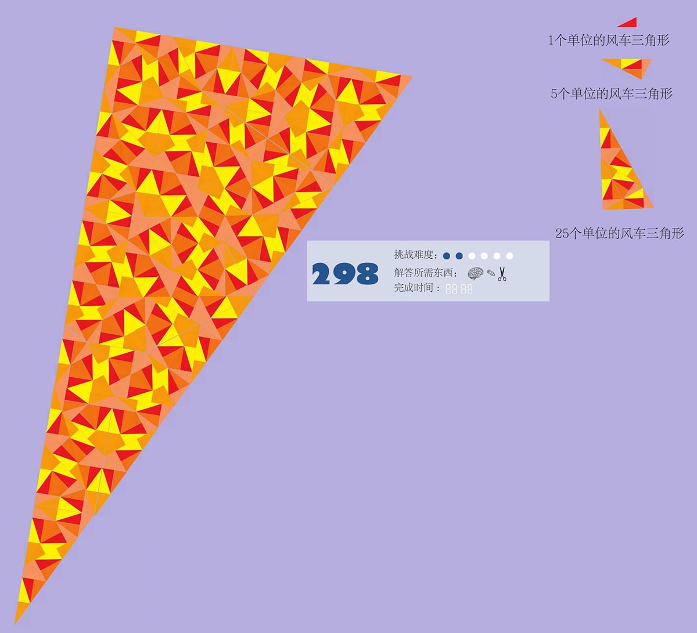
纸风车三角形与超级拼砌——1994年
正如我们在第8章所了解到的，非周期性拼砌是由拼砌部分的非周期性组合而得到的镶嵌方式。我们已经谈论过著名的彭罗斯拼图。但在1994年，普林斯顿大学的约翰·康威与得克萨斯大学的查尔斯·雷丁发现了另外一种非周期性的拼砌：这就是只能用一种三角形拼块组成的纸风车拼图，这就是所谓的纸风车或是康威三角形。这是人们首先发现非周期性拼砌具有这样的属性，即拼砌的部分能在无穷个方向上进行拼砌。
五个这样的三角形进行超级拼砌能够形成一个五单位的纸风车三角形。只有形成超级拼砌的纸风车三角形，才能够形成上图所示的纸风车拼图。如果组成拼图的拼块能组装成覆盖整个平面的超级拼块，也可以按比例缩成原始拼图大小，那么，这个平面拼图就具有比例对称性，即可伸缩性。这样的例子包括正方形拼图与等边三角形拼图。
奇偶性——1994年
奇偶性一词一开始是数学用语，用来区别偶数与奇数。如果两个数全是偶数或全是奇数，那么它们就有相同的奇偶性，否则它们就有相反的奇偶性。
偶数次移动，奇偶性不变。很多纸片、硬币与拼图游戏，其实都是在运用奇偶性原理，即利用一种被称为“奇偶校验”的简单方法。
在亚原子粒子与波动函数等物理研究方面，奇偶性同样扮演着重要的角色。
显然，你肯定听说过“菊花花瓣”这个游戏。这个游戏是说某人从一朵菊花上一片又一片地摘下花瓣，然后说着：“他喜欢我，他不喜欢我。”如果总数是偶数的话，那么利用奇偶性原理，你很快就能知道最后的答案是否定的。
这就是数学家们所说的“奇偶校验”，它是数学领域内最重要的工具之一。在面对一个问题时，这个数学工具通常可以帮助我们迅速找到优雅的证明方法。
三个玻璃杯的游戏
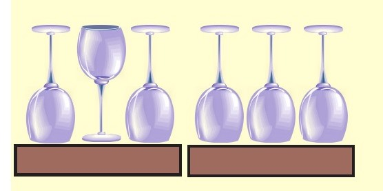
在第一种布局里，三个杯子如图所示那样放置。同时上翻两个杯子，最终的目的就是让所有的杯子能在三个步骤之后全部杯口朝上。
你可以很容易做到。在你做到之后，变一下把戏。把中间那个玻璃杯翻过来，然后要求别人这样做。这是不可能做到的。第一个步骤是奇校验，第二个步骤是偶校验。当有偶数（0，2，……）个杯子杯口朝上的时候，那么系统就是偶的。当有奇数个杯子杯口朝上时，整个系统就是奇的。在第二种布局里，将任意两个杯子翻转三次，都无法改变整个系统的奇偶性。
六个玻璃杯的问题
如图所示，有六个玻璃杯。任意拿起两个玻璃杯，然后将之翻转过来。接着你可以按照自己的意愿继续翻转一对杯子。你最终能让所有的玻璃杯都杯口朝上，或者杯口朝下吗？
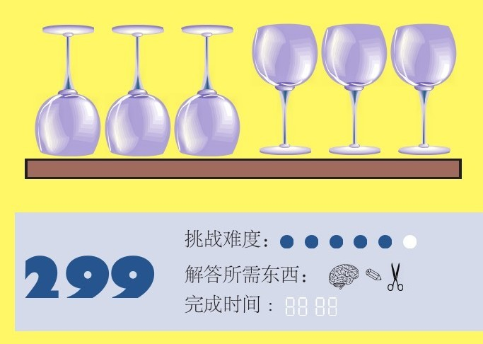
七个玻璃杯的问题
这个游戏的目的就是将七个玻璃杯都杯口朝上，每次只能翻转三个玻璃杯。你需要多少个步骤才能达成这个目标呢？
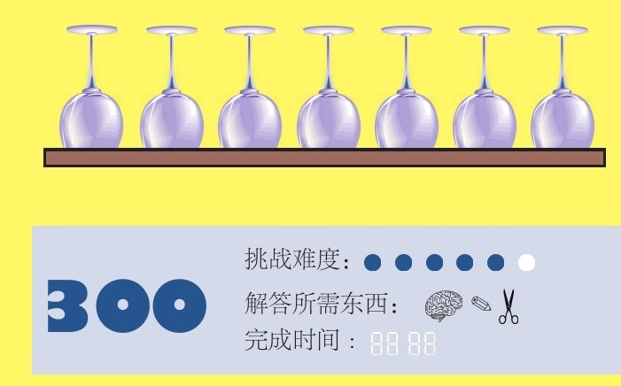
十个玻璃杯的问题
如图所示，有十个玻璃杯，五个杯口朝上，五个杯口朝下。任意选择两个玻璃杯，将之翻转。你可以按照自己的想法继续翻转一对杯子。最后，你能让所有的玻璃杯都杯口朝上吗？
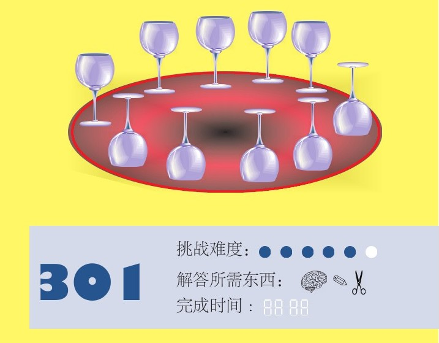
自我描述的十位数字——1994年
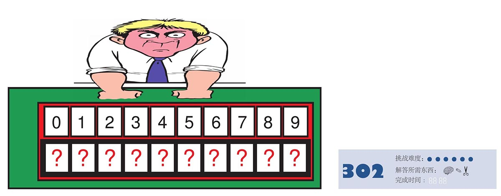
有一个系列的谜题是基于前十个数字（包括数字0）而形成的。用马丁·加德纳的话来说，这个系列谜题中最具美感的就是自我描述的十位数问题。在多伦多的安大略科学中心，这一让人着迷的谜题被陈列在数学展览厅里，如图所示。
这个游戏的目标就是找到一个十位数，填在第二排的空格里。这个数字是由第一排的十个数字所决定的，规则如下：
在第二排的第一个数字表明这个十位数中0的数量。第二个数字表示这个十位数中1的数量。第三个数字表示这个十位数中2的数量，依此类推。最后一个数字表示这个十位数中9的数量。
这有点像是十位上的数字在创造自己。难怪马丁·加德纳称之为自我描述的数字。你该怎样着手去解答这样一个充满挑战、看似不可能解答的问题呢？
这个问题是否存在解答的方法呢？如果存在解答的方法，又有多少种呢？你能从中发现一些深刻的内涵，更好地解答这个问题吗？
来自麻省理工学院的丹尼尔·索汗（Daniel Shoham）发现了一些与这个问题相关的有趣事实。他得出了这样一个结论：因为在第一排上有十个不相同的数字，第二排数字的总和也必定等于10。他找到了第二排中每个数字可能的最大值。你能按照他的这个逻辑，找到这个谜题唯一的解吗？
有多少个数字呢？
在我收集的众多逻辑性谜题当中，有一款特殊类型的数字游戏，这个数字游戏只是基于从0到9的十个数字，或是将数字0排除出去，变成从1到10的数字。
这种类型的一个早期游戏版本就是十位数的数字谜题。如果只使用从0到9这十个数字，你能得出多少个不同的十位数呢？当然，以数字0开头的数字是不能计算在内的。
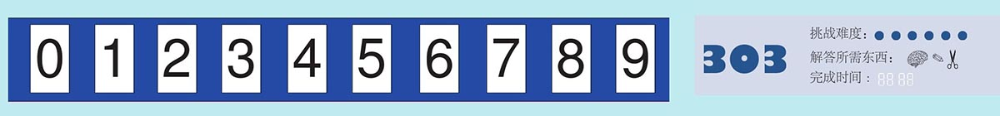
没有照明的房间——1995年
在20世纪50年代，欧内斯·施特劳斯提出了这样一个问题，是否存在着这样一个多边形的房间：这个房间的每一面墙都是用镜子覆盖住的，当你在房间内的某个位置点亮一根火柴后，房间的有些部分依然笼罩在黑暗当中，因为镜子对光线的反射无法到达那些地方。
这个问题一直没有答案，直到1995年，加拿大阿尔伯塔大学的乔治·托卡尔斯基找到了问题的答案。他说，确实存在这样的房间，而这样的房间最小拥有26面墙，其建筑平面图如图所示。如果这根火柴在合适的位置点燃的话，那么房间至少有一点会处在黑暗当中。托卡尔斯基将之称为最小的没有照明的房间。在托卡尔斯基设计的这个房间里，火柴应该处在一个特殊的点，才能让房间的某个部分处于黑暗当中。但是，如果你将火柴稍微移动一下位置，整个房间就会再次亮起来。在此，我们应该注意到，如果一束光恰好射在这个房间的一个角落里，那么光线就会在两面相邻的镜子的连接处被吸收，完全不会反射。
一个改进版本的解答方法是D.卡斯特罗在1997年提出的，他在一个具有相同属性、24面墙的房间里做到了。
下面这个问题依然没有得到解答：是否存在着一个极为复杂的房间，无论你在房间的哪个位置手持火柴，这个房间始终都会有黑暗的角落？目前还没有人找到这个问题的答案。
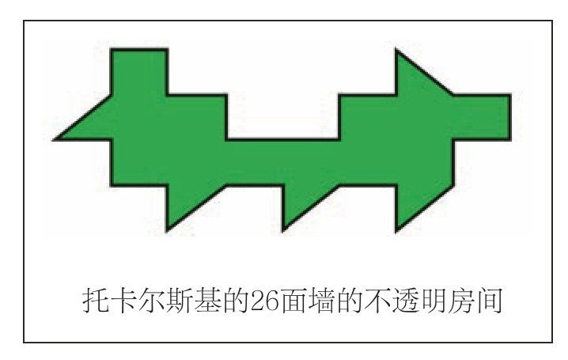
有照明的房间
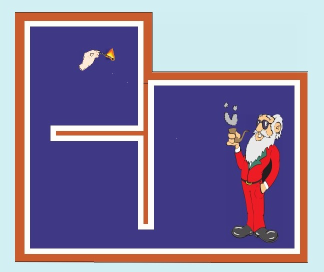
想象一下，如图所示的L形房间的墙壁上、地板上、天花板上全部被镜子所覆盖。这个房间处于完全黑暗的状态。一个站在左上角的人点亮了一根火柴。请问，在房间右下角抽烟的人是否能够通过镜子的反射看到这根点亮的火柴呢？
彭罗斯的无照明房间
1958年，罗杰·彭罗斯利用椭圆的属性，做成了一个始终都会有黑暗角落的房间——不管蜡烛（黄色的点）摆放在哪里。红色的点就是这个房间的顶部与底部形成的半个椭圆的焦点所在。你能画出每种情况下处于黑暗部分的区域吗？
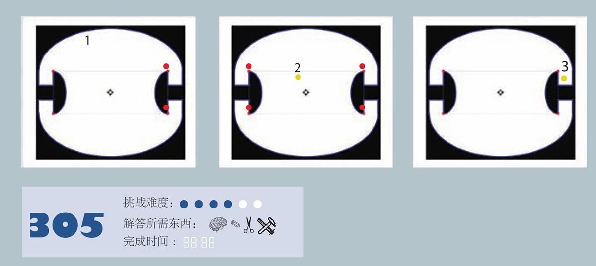
冈布茨，世界上第一个自我摆正的物体——1995年
所谓的冈布茨，是已知的第一个凸面三维同质物体，将这个物体放在一个平面上，只有一个稳定的平衡点与一个不稳定的平衡点。
离心的球体也是一例，但它是密度不均的。是否能够建构一个单基、同质且凸面的三维立方体这个问题，是俄罗斯数学家弗拉基米尔·阿诺尔德在1995年的一次会议上与加博尔·多莫科什交谈时提出来的。
很多人之所以认为冈克茨形状是不存在的，是因为在二维状态下，根本就不存在只有两个点就能处于平衡状态的形状。人们能做到的最好的方式就是通过两个稳定与两个不稳定的点去获得这样的平衡。
这种被称为冈布茨的形状是加博尔·多莫科什（多莫科什是匈牙利布达佩斯科技与经济大学机械、材料与结构系的主任）与他的一名学生彼得·瓦尔科尼（在普林斯顿大学工作）共同提出来的。在他们提出冈布茨这种形状之后，冈布茨就经常出现在许多数学期刊上的头版头条上，多莫科什也在2007年12月7日上了英国的电视台，向观众们解释冈布茨的运转方式。正如我们所看到的，冈布茨是一种让人感到兴奋的物体，这是第一个完美的自我摆正的物体，也是最近几年来最具美感的创意性成果之一。若是将冈布茨随意地放置在水平面上，那么冈布茨就会迅速回到它的平衡点上，这与不倒翁玩具非常相似。但是，不倒翁玩具依赖的是玩具底部的重力，而冈布茨则是由同质的材料构成，因此是它的形状让它能够自我摆正的。
冈布茨唯一一个不稳定的平衡点就在与其稳定平衡点相对的位置。在这个不平衡点上，冈布茨可以处于平衡状态，但是哪怕最轻微的干扰都会让冈布茨倒下来，这与通过笔尖竖起来的铅笔是一样的。冈布茨形状并不是独一无二的，而是有无数个不同的衍生版本。绝大多数冈布茨的形状都接近一个球体，并且有着严格的形状容许误差（大约每100毫米只能容许0.1毫米的误差）。冈布茨的形状有助于解释某些拥有神奇平衡能力的乌龟的行为，因为这些乌龟能够在被翻过来之后重新翻回去。
永恒之谜——1996年
永恒之谜是一款瓷砖拼图游戏，它是克里斯托弗·蒙克顿发明的，1999年6月，该游戏由艾特尔游戏公司发行出售。
这个游戏需要用209块不规则形状的、颜色相同的小多边形拼块去填充一个较大的、形状基本是正十二边形的空间。
这个拼图游戏在发行出售的时候就宣称，这是一个不可能完成的拼图游戏，并且悬赏100万美元给任何能在四年内完成这个拼图游戏的人。2000年，这份奖金终于有了着落。第二款拼图游戏是永恒之谜2游戏，该游戏在2007年夏天发售，并且悬赏200万美元给任何能够完成这个拼图游戏的人。直到现在，仍然没有人能找到完整的解答。
这款游戏很快让人着迷，在世界范围内卖出了50万份。永恒拼图游戏在其发行当月，就以35英镑的零售价成为英国当月最畅销的游戏。
在这款游戏上市之前，蒙克顿就想过，任何人要想完成这个拼图游戏至少需要三年的时间。那个时候，他估算，这个拼图游戏的每一个答案都有10500种可能性，即便你有100万台电脑，要想解答这个问题，都需要耗尽整个宇宙所有的时间。
但是，2000年5月15日，在这个拼图游戏悬赏的截止日期之前，来自剑桥大学的两位数学家亚历克斯·塞尔比与奥利弗·赖尔登破解了这个谜题。他们取得成功的关键就在于，他们严格按照数学的方法去计算，决定了每一个拼块的可拼砌性，以及拼盘上每个空间区域的属性。在七个月的计算时间里，他们只用了两台计算机，经过不懈的努力，就找到了答案，如图所示。
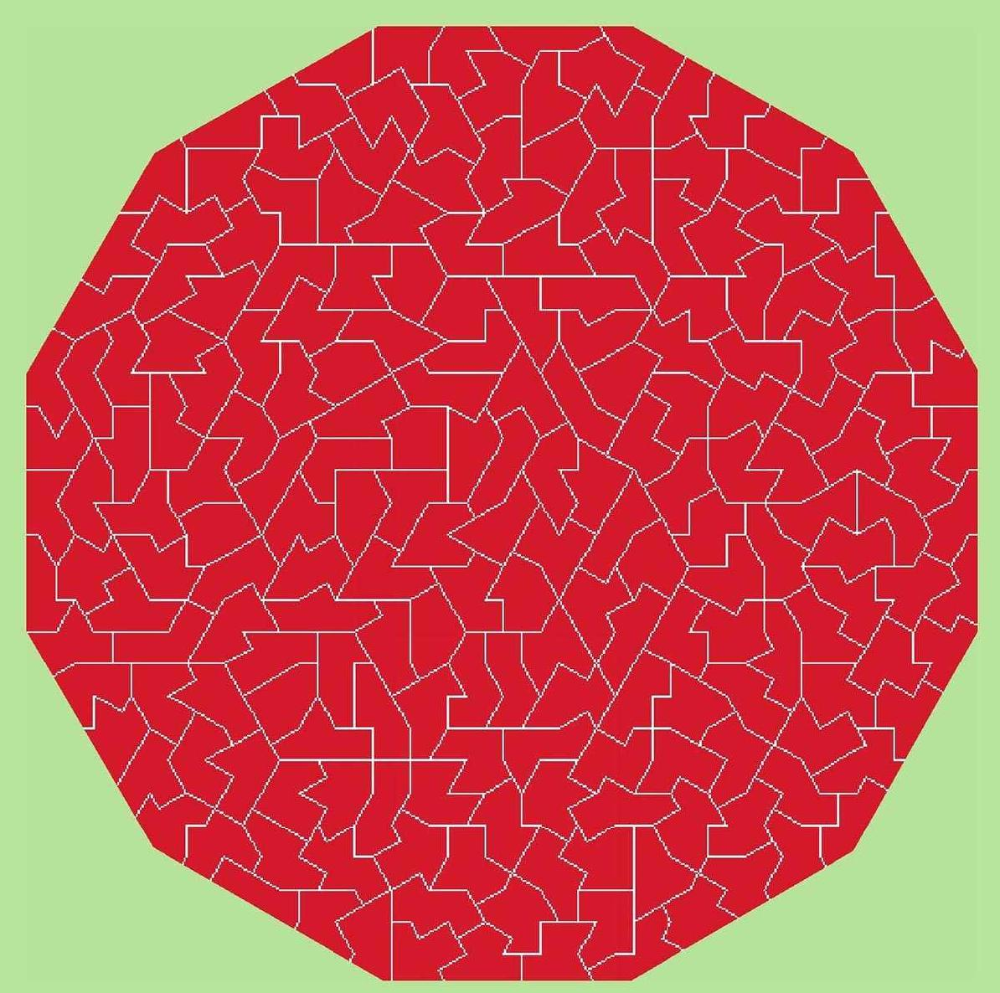
雷蒙德·斯穆里安（1919—）
用马丁·加德纳的话来说，雷蒙德·斯穆里安是一个“拥有哲学家、逻辑学家、数学家、音乐家、作家与了不起的谜题发明家这些头衔的独一无二”的人。斯穆里安一开始的工作是进行舞台魔术表演，他最初的兴趣爱好却是音乐与数学。1955年，他在芝加哥大学获得了商学学士学位，1959年在普林斯顿大学获得博士学位。雷蒙德是一位蜚声国际的数理逻辑学家。他还以作家的身份闻名于世。他一共写作了20多本书，被翻译成17种不同的语言。
正如马丁·加德纳所总结的：“雷蒙德·斯穆里安的确是一位拥有着禅师与圣人般智慧的人。他拥有音乐家与魔术师那样的艺术感与细腻感，拥有诗人的感情、创造力与口才，拥有逻辑学家与数学家的洞察力与分析能力，还拥有巫师那样的神奇力量。”
说真话的城市——1996年
生活在真话城的人始终都在说真话，而生活在假话城的人当然始终在说假话。你正走在前往真话城的路上，你来到了通往两座城市的十字路口。正如图所示，你看到了一个让你感到困惑的标语，你不得不询问那些十字路口旁边的人，想得到正确的方向指引。遗憾的是，你不知道那个人所说的是真话还是假话。你只能向这个人提一个问题。要想从他的回答里知道哪一条才是通向真话城的道路，你该提出什么样的问题呢？
说真话与婚姻
国王有两个女儿，她们的名字是阿梅莉亚与利拉。其中一个人已经结婚了，而另一个还没有结婚。阿梅莉亚总是说真话，而利拉总是说假话。在很多神话故事里，年轻人只能向两人中的一个提出一个问题，判断她是否已经结婚了。当然，他的奖赏就是迎娶国王那位尚未结婚的女儿。
他要提出的这个问题不能超过五个字。
你知道他提出的问题是什么吗？
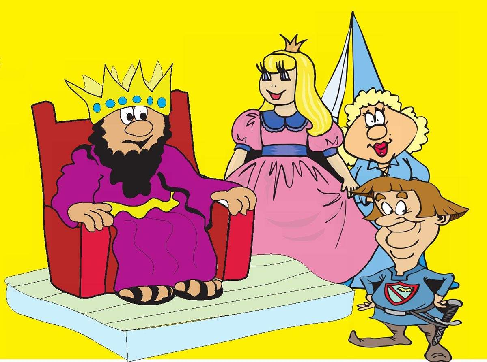
真话、假话以及真假话之间
在一座名叫“没有人知道真相”的大都市里，有一些人总是说真话，也有一些人总是说假话，还有一些人一时说真话，一时说假话。你与生活在这座城市的某个人见面。这一次，你可以提出两个问题，而他给予的回答必定能够让你判断出他属于这三种类型中的哪一种。你会向他提出哪两个问题呢？
雷蒙德的演说
“我对神秘主义与宗教有着强烈的兴趣，虽然我并不信仰任何宗教。我对比较宗教学更感兴趣——我想知道世界各地的宗教信仰背后所隐藏的事实。我相信，所有的宗教都在努力接近真理，但是谁也没有完全找到这样的真理。对我影响最深的一本书就是理查德·比克所写的《宇宙的意识》（Cosmic Consciousness），这本书的中心思想就是说新型的意识正在通过进化慢慢地融入人类的生活当中，而过往的神秘主义与宗教领袖，以及很多艺术家与世人都拥有着这种可预见的宇宙意识。布克引用了这些人的许多思想，最终呈现出让人叹为观止的内容。因此，我向你们强烈推荐这本书。
在政治领域内，我是一个极端的自由主义者，但这也并不是针对所有事务的——比方说，我绝对会拒绝那些所谓的‘政治正确’的东西。事实上，我这个人有点特立独行，而我的墓志铭将会是这样的：
在高中的时候，我爱上了数学，并在数学与音乐之间左右为难。
另一件有趣而神奇的事情发生在我在普林斯顿大学念书的时候。在那些日子里，我经常会到纽约市玩耍。在一次旅行中，我遇到了一位极具魅力的女音乐人。在某个时刻，我耍了一个非常聪明的把戏，甚至还让她欠我一个吻呢！我并没有向她索吻，而是建议我们玩‘要么加倍，要么欠款一笔勾销’的游戏。她是一位大度的人，于是就表示同意了。很快，她就欠我两个吻。接着，我又耍了一个把戏，她欠了我4个吻，之后是8个吻、16个吻——这些数字不断地翻倍与升级，直到最后我才发现，我结婚了。我与布兰切这位充满魅力的女音乐人结婚了，并且我们结婚的时间已经超过48年了。遗憾的是，布兰切在2006年去世，享年100岁。”
杰里迈亚·法雷尔，一位数学家兼魔术师与他著名的“选举日”游戏——1996年
杰里迈亚·法雷尔（1937—）是美国印第安纳州巴特勒大学一名退休的数学教授。他发明的一款谜题游戏“1996年‘选举日’”登上过《时代周刊》杂志。他还为许多书籍与报纸写过许多与谜题相关的内容，其中包括斯科特·金在《探索杂志》上的谜题专栏。
他就读于内布拉斯加州立大学，1963年大学毕业，获得了数学、化学与物理学学位。之后，他获得了数学硕士学位。1966年，他受邀成为印第安纳州巴特勒大学的教师，在那里工作了40年时间，几乎教遍了数学系的各个分支领域。法雷尔在1994年正式退休，但他依然会教一个学期的课程。
法雷尔以他为《纽约时报》设计的许多纵横字谜游戏而闻名。1996年，他设计了他最著名的“选举日”谜题游戏。其中的一句话隐藏着“明日头条新闻”的线索，这句话中有14个字母。但是，这个游戏只有两个正确的答案：一个答案是“鲍勃·多尔赢得选举，成为总统”（BOBDOLE ELECTED），另一个答案是“比尔·克林顿赢得选举，连任总统”（CLINTON ELECTED）。所有的纵横单词都是按照这样的方式去设计的，它们可能是这两句话中的一句，从而让答案能够满足最终的选举结果。维尔·史沃茨称这是一项“惊人的壮举”，说这是他最喜欢的谜题游戏。
2006年，法雷尔与他的妻子从A.罗斯·埃克勒手中接手《单词方式》这本季刊杂志的编辑与出版工作。
法雷尔是平面地球协会的会员，纽约大学计算机科学系教授丹尼斯·E.沙沙颁给了他“一等启发奖”，用于表彰他第一个正确解答了沙沙著作《谜题冒险》里那些内嵌的谜题。由于给出了解答方法，法雷尔被邀请到格林威治村的某个地方与作者会面。
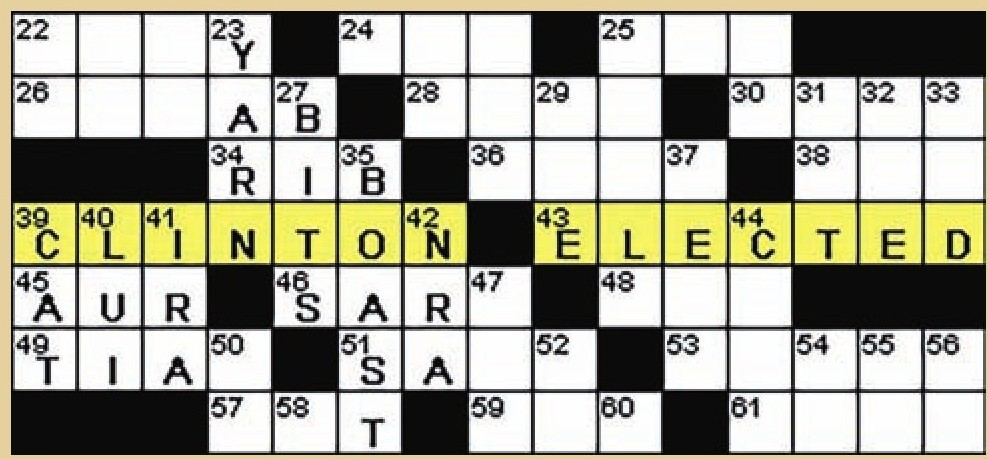
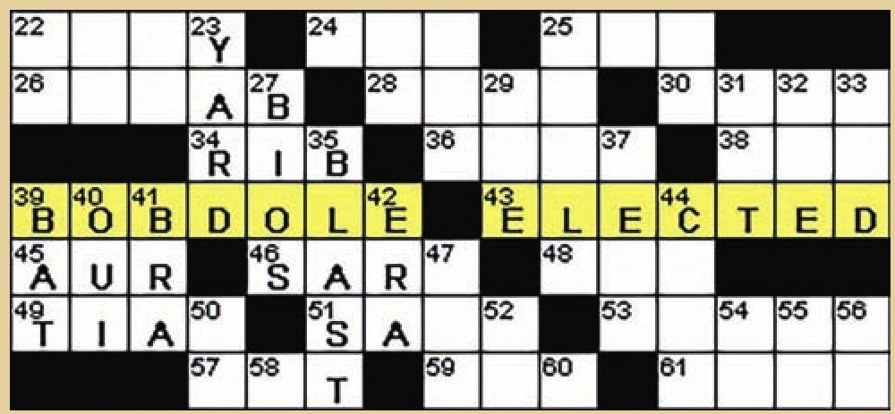
星相线与超立方体游戏
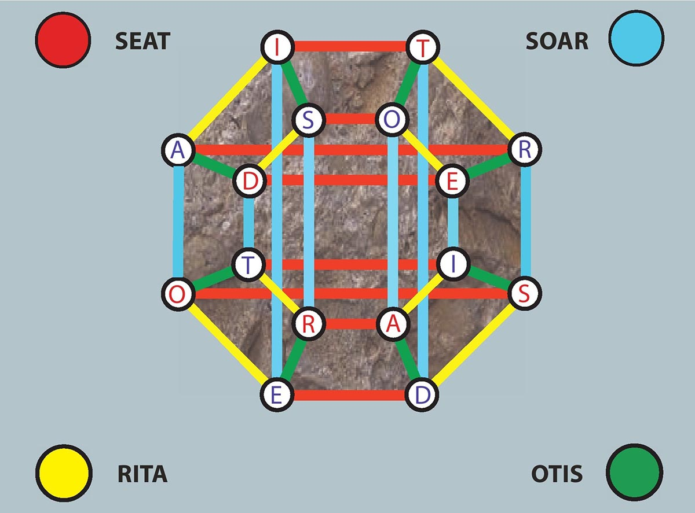
星相线游戏是一种四维空间的神奇魔法，是杰里迈亚·法雷尔发明的。你可以轻松操作，让你的观众感到震惊。这种游戏是在一个有16个节点的四维游戏盘上进行的，每一个节点上都贴有红色和蓝色的“ASTEROID”这个单词中的字母。
你可以要求某位朋友从中选出一个字母，那么你接着可以向他提出下面四个问题：
你所选择的字母是在单词SEAT、SOAR、RITA还是OTIS里？
为了保证你的魔术更具吸引力，你可以告诉你的朋友，她或他可以随意决定是否诚实地回答这些问题。
假设你的朋友对这四个问题的答案是：
你就能立即知道他选择的字母是T，你可以表扬他说出了真话。
如果他决定撒谎，那么他的回答就是：
你同样能够知道他选择的字母是T，但你也能够知道他在说假话。
你能解释这个魔术的运转方式吗？
斯图尔特·科芬的多面体互锁拼图游戏——2000年
在多面体互锁拼图领域内，斯图尔特·科芬是世界范围内公认的权威设计师。在他开始探索正交拼图（所谓的正交拼图就是指拼图的每个部分都与其他部分直角拼砌）之外的领域前，还鲜有这样的拼图游戏。但是，科芬却设计发明了数百种这样的拼图游戏。其中一些拼图游戏已经用塑料进行了商业化生产。在《多面体剖分的拼图世界》一书中，斯图尔特展示了他设计的几何主题的互锁拼图。
在某些情形下，斯图尔特发现了一个简单却极具美感的设计模式，他将这样的设计模式推向了极致，带来了惊人的结果。
他设计出了许多让人着迷的几何拼图。从20世纪70年代初期开始，他就在他的工作室里制作这些拼图，创造出了200多种原创拼图游戏。他的设计体现出来的技巧性与创造性使他受到了拼图爱好者与收藏者的广泛赞誉。
2000年，斯图尔特荣获山姆·劳埃德奖。2006年，他获得了芦原伸之奖，这是为了表彰他在设计发明机械拼图游戏方面做出的卓越贡献。
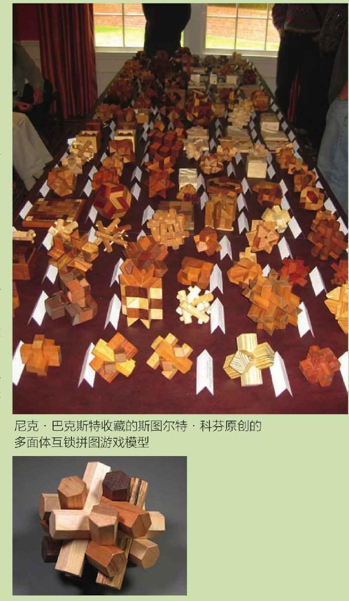
蚱蜢游戏——2002年
2002年，在安特卫普举办的国际谜题大会开幕的当天，有一个持续时间很长却很无趣的演说环节。当时，坐在台下的我正在一张正方形的白纸上无聊地乱画着，突然间，一个纸笔游戏的灵感从我的脑海里冒了出来。这不是第一次了。我的潜意识总会不时为我提供创作灵感。
我的想法是这样的：想象一下，一只蚱蜢沿着已知的整长度进行跳跃，它需要按照下面的规则去做。
我们的这只蚱蜢必须从刻度为0的点开始进行跳跃，按照递增的长度连续进行跳跃：1-2-3-4-……-n。这只蚱蜢需要尽可能多地跳跃，并且在这条线的终点位置完成第n次的跳跃。如果我们能够找到这样的一条线，那么这个游戏就结束了，也就说明我们找到了解答这个谜题的方法。如果找不到这条线，那就说明这个谜题无解。注意，蚱蜢可以在这条线的两个方向上进行跳跃。
这个问题似乎很有趣。于是，我决定继续进行涂鸦，以求通过较为系统的方法找到这个问题的解答。我首先从线条1开始。此时，我意识到有的线是有解的，而有的线是无解的。我渐渐清楚地意识到，这个无辜的蚱蜢的理念并不像我一开始涂鸦时所想的那么简单。看来解答这个问题需要找到一个无穷数列，来求出每一个解。但是，这样的数列背后是否隐藏着什么数学原理呢？
对于前面八条线，我找到了两个解。n=1的情况是显而易见的，如图所示。恰好在这个时候，这个无聊的演说结束了。
我回到自己的房间，继续找寻解答。到晚上，我已经找到了当n的数值到达40时的16个解。这并不是一件容易的事。蚱蜢游戏让我明白，只是在一条线上以连续单位长度去移动一个点，就会生成一个具有挑战性的游戏，这个游戏蕴含着微妙的数学原理与令人惊讶的属性。
在这天晚些时候，我与迪克·赫斯会面，并且恳求他帮忙找到这个问题的一般性解答方法。第二天，我在吃早餐的时候遇到了迪克·赫斯。他礼貌地感谢我赐给他一个无眠之夜，但是他向我保证绝对不会放弃对这个问题的解答。迪克叫上了本杰·费舍尔帮忙。在接下来的一天里，蚱蜢数列问题背后隐藏的数学原理终于被发现了，这为蚱蜢游戏的无穷数列问题提供了关键的理论支持。
这就是蚱蜢游戏诞生的经过。2010年，在亚特兰大举办的加德纳大会上，我遇到了尼尔·斯隆。我向他展示了这个蚱蜢游戏，并将完整的数列融入其中。尼尔对这个蚱蜢游戏表现出了极大的兴趣。
今天，蚱蜢数列游戏在网络上也占有重要的地位。在《尼尔·斯隆整数序列的在线百科全书》里，我发现自己设计出来的这个数列与圆周率、质数、斐波那契数以及其他数都被收入其中。我对此感到非常自豪。
蚱蜢游戏的几个例子
n从数字1到8的这八个游戏当中，只有当n=1与n=4的时候，才是有解的（大红色为终点）。
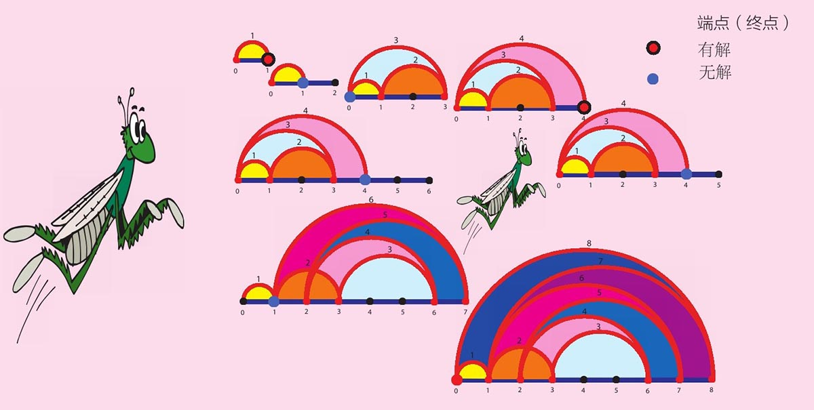
蚱蜢问题：前40段
已知一条长度为整数n的线段，我们要从刻度0开始，以长度递增的方式沿着这条线进行持续的跳跃：1-2-3-……-n。我们要做出尽可能多的跳跃，最终在这条线的终点上完成第n次的跳跃。
对这条长度为n的线段来说，如果在终点恰好能完成第n次的跳跃，那它就是有解的，否则它就是无解的。可以往前跳，也可以往回跳，但是绝不能离开这条线。当n的数值变大时，跳法可能不止一种。在前40个长度之内，你能找到多少个解呢？前面两个答案已经给出来了。
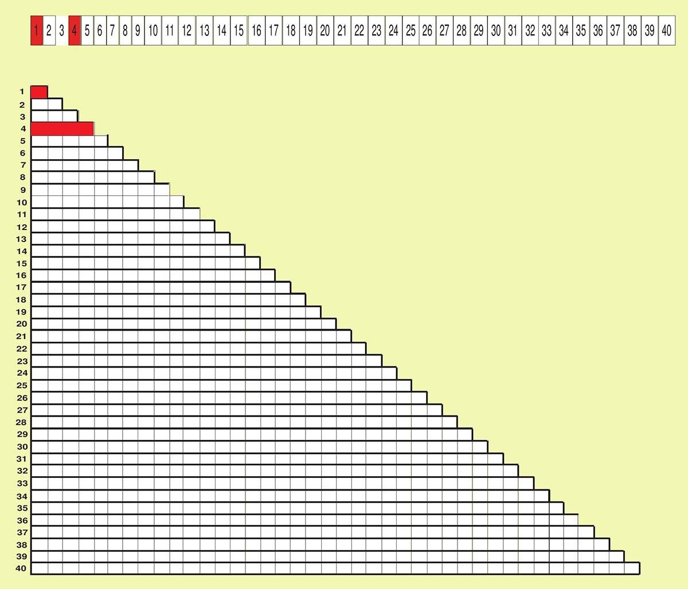
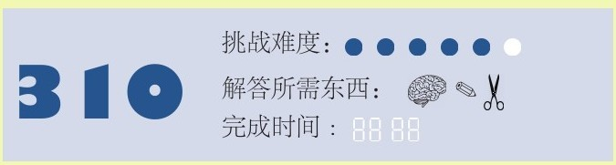
锡德·萨克森（Sid Sackson，1920—2002）
《游戏集锦》（Gamut of Games）一书由锡德·萨克森所著，首次出版于1969年。这本书囊括了许多种纸笔游戏、卡片游戏与棋盘游戏的游戏规则。书中提到的许多游戏之前在其他书籍里从来都没有被提到过。因此，很多人认为，任何对抽象的策略游戏感兴趣的人都应该阅读这本书。
锡德·萨克森被视为历史上最重要与最具影响力的游戏设计者之一。他还是一位狂热的游戏收藏家。据估算，他的游戏收藏数量在某个时候曾是世界上最多的，数量高达18000套，其中包括许多游戏的原型与限量版游戏。这些“宝物”都被他保存在位于新泽西州的家里，直到2002年他以82岁的高龄去世。
如果这些游戏至今仍保存完好的话，那么萨克森收藏的游戏将是对现代棋盘游戏的一份极具价值的记录。
萨克森梦想着有一天能够成为一座游戏博物馆的馆长，这座博物馆的主要藏品就是他的收藏。锡德寻求过我的帮助，我们为此进行过多次的讨论，商讨如何才能建立起这座博物馆。最后，我们的计划没有成功，锡德对此感到非常失望。遗憾的是，在他去世之后，他的许多收藏品要么散落了，要么被拍卖了。
切割边角
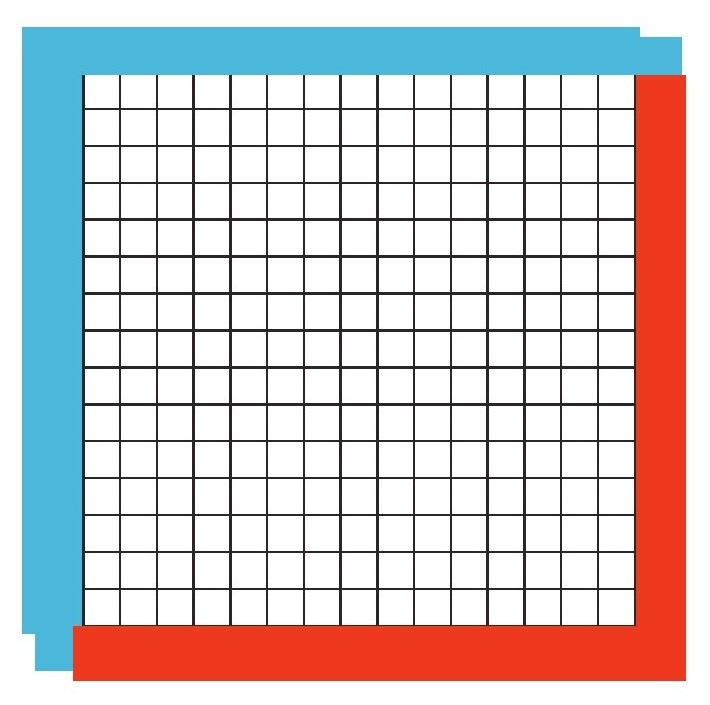
两位选手在用两种颜色（红色与蓝色）中的一种进行游戏，他们沿着正方网格轮流画出一个角，至少一条相连接的边是对方的颜色。在这场游戏结束时，如果某个区域中某位选手用他自己的颜色画出的边更多，那他就赢得了这块区域（用·表示）；如果该区域两种颜色的边一样多，那它就不属于任何一个选手（用*表示）。
右图的这个游戏示例中，红方取得了胜利。
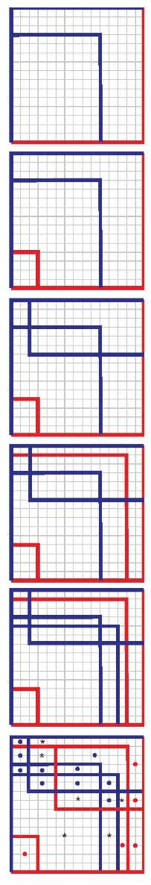
芦原伸之（Nobuyuki Yoshigahara，1936—2004）
芦原伸之时常被称为“芦原”，他是日本最著名的谜题发明家、收藏家、解谜专家与沟通专家。
他从东京理工大学应用化学系毕业后，从事工程学研究工作，后来改行，到高校进行教学工作，成为一名化学教师与数学教师。
作为一名专栏作家，芦原伸之是多个期刊的重要撰稿人，其中就包括著名的《夸克》杂志。他创作的与解谜相关的书籍多达80本。
随着他谜题发明家的名望逐渐攀升，他将自己的设计授权给一些公司，推向市场。比如，他将包括“尖峰时刻”在内的一些游戏授权给二元艺术公司（现名为乐享游戏公司）、伊舍出版公司、花山玩具公司等公开发售。他还是一位狂热的计算机程序员，用计算机解答了许多数学谜题。
芦原伸之是国际谜题大会的积极参与者，曾到世界各地参加过一些年度会议。
2005年，他死后一年，国际谜题大会的谜题设计竞赛被重新命名为芦原伸之谜题设计竞赛，以表达对他的敬意。
2003年，游戏与谜题收藏家协会授予芦原伸之劳埃德奖章，表扬他在发明机械谜题方面所做出的杰出成就。芦原伸之是一位著名的发明家、收藏家与谜题的推广者，也是我的一位挚友。
杯子里的硬币——向芦原伸之致敬的游戏
在亚特兰大举办的加德纳大会的早餐会上，芦原伸之开始即兴创作。他取出一个杯子，装满水，然后从口袋里取出一些硬币，接着问我：在杯子里的水满溢之前，一共能够放下多少个硬币？我对表面张力方面的知识是有所了解的，于是我就没有中他的这个圈套。他肯定认为我会说只能放入很少的硬币，比方说3个或4个，但是我果断地预测了12个硬币。
在接下来的10分钟里，芦原伸之非常耐心地将59枚硬币放入了杯子里，直到他的口袋里再也没有了硬币。我给了他几枚硬币，直到放入第63枚硬币之后，杯子里的水才满溢出来。芦原伸之像往常那样赢得了大家的掌声，也赢得了这次打赌。我想问的是，这是怎么做到的呢？
水分子间具有很强的吸引力。在水的表面，水分子会受到向下的强大吸引力，而表面张力则会让水的表面变得像弹性膜一样。当硬币放入杯子里之后，这个弹性膜片就会从边缘拉伸，形成一个拉伸的曲面。
“追逐丁香”视错觉——2005年
下面这些令人震惊的余像幻觉是杰里米·欣顿在2005年之前创造出来的。他在设计视觉运动实验的刺激物的过程中，无意间发现了这样的图形。
在让圆盘沿着一个中心点转动的程序里，他忘了移除之前的圆盘，结果创造了一种移动间隙的视错觉。在发现了一个转动的绿色圆盘余像之后，他调整了前景色、背景色、圆盘的数量、时机，从而达到最佳的效果。
2005年，欣顿又把这些圆盘调模糊，这样一来，当一名观察者持续地注视中心点时，这些圆盘似乎就消失了。欣顿试图以此作品参加EVCP视错觉大赛，但是却因为没有提前报名登记而失去了参赛资格。欣顿找到了迈克尔·巴克，后者将一张呈现这一幻觉的动图放在了他的网站上，称之为“追逐丁香”视错觉。之后，他设计出了一款可扩展的JAVA程序。2005年，这种视错觉版本在互联网上开始流行，被视为最美妙的余像幻觉之一。
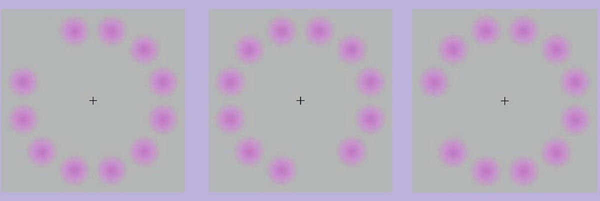
着色的余像
将你的视线集中于中间的十字上。因为视网膜疲劳效应，旁边着色的点会在几秒钟之内消失，这时物体的余像与它对视网膜的刺激相抵消，但是，过一会儿，你将会看到一个缓缓移动的绿色余像在慢慢呈现。
杰里米·欣顿发现的“追逐丁香”着色点幻觉的各个版本是着色余像幻觉最震撼的例子之一。如果你的眼睛时刻紧盯着着色点，那么它们就会依然保持相同的颜色：粉色。但是，如果你只是盯着中间位置的黑色点，那么过一段时间之后，所有的点都会渐渐消失，然后缓缓移动的绿色点就会呈现出来。我们大脑运转的方式真是非常神奇。其实，根本就不存在什么绿色的点，而粉色的点也并没有真正消失。
机械拼图——2006年
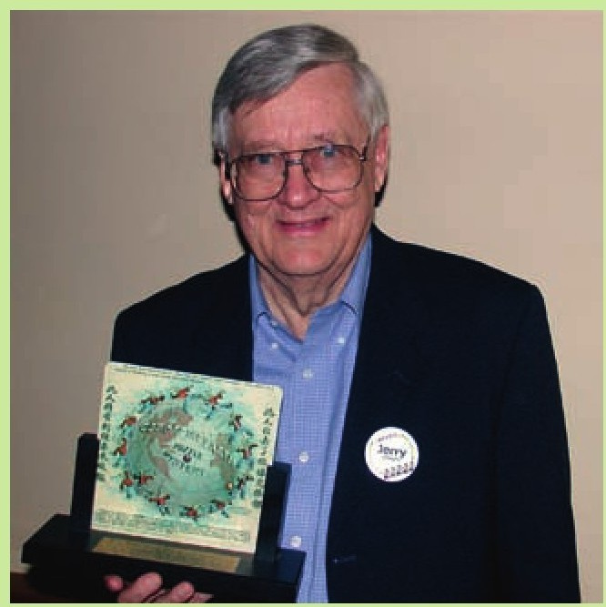
杰里·斯洛克姆（Jerry Slocum，1931—）是美国一名机械拼图专家、历史学家与收藏家。他将自己的一生都奉献给了拼图事业，直至退休。他曾在休斯航空公司担任工程师。
他个人收藏了4万套机械拼图游戏与4500本书，这是该领域的世界纪录。
杰里·斯洛克姆在推广机械拼图方面所做出的贡献应该说是无人能出其右。他的多本优秀的拼图书籍始于1986年的《新旧拼图》，这本书包括了数百种彩色的古代机械拼图。在这本书的引言里，马丁·加德纳预测这本书将会是“一部经典”。1993年，斯洛克姆成立了斯洛克姆拼图基金会，这是一个旨在通过拼图展览会、出版物、交流与收藏去向公众推广拼图的非营利机构。前八届的国际拼图会议是在斯洛克姆比弗利山庄家中的客厅里举办的。后来，这样的会议慢慢演变成了一年一度的邀请会，在北美、欧洲与亚洲等地轮流举办。
杰里·斯洛克姆上过约翰尼·卡森的《今夜秀》、玛莎·斯图尔特的《玛莎生活》以及其他八个全国性的电视节目。2006年，他向印第安纳大学的莉莉图书馆捐赠了3万套拼图游戏，从而第一次让拼图集萃出现在了学术机构。
三十二面体——2002年
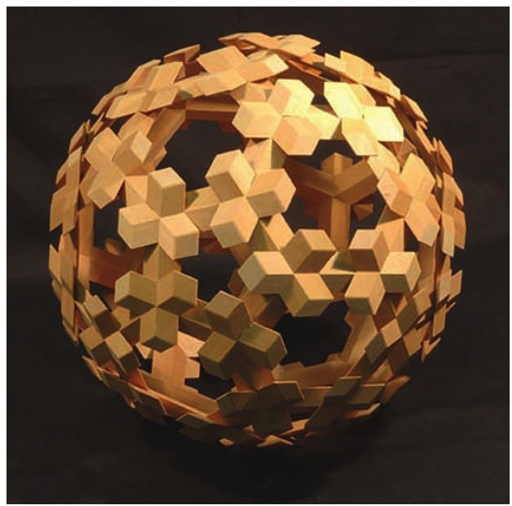
迈克尔·泰勒摄，印第安纳大学莉莉图书馆提供
在杰里·斯洛克姆捐赠给印第安纳大学的3万套拼图游戏里，就有著名的三十二面体，这是日本拼图学家Yashirou Kywayama在2002年发明出来的。
在以斯洛克姆名字命名的图书馆的崭新展厅里，大约陈列着400套拼图游戏。参观莉莉图书馆的读者可以试着拼一下这些千百年来给人类带来欢乐的拼图的复制品。
有孩子的家庭——2010年
下面这个问题是马丁·加德纳发明的“有孩子的家庭”系列概率谜题的一部分。
生男孩与生女孩的概率似乎是相等的，但事实总是如此吗？
你可以看看下面这几个问题，是如何运用到马丁·加德纳所提出的一系列具有挑战性的概率谜题的，其中涉及条件概率——也就是说，在其他事件出现的情况下，某一事件发生的概率。你可以看到，这样的结果通常是违反直觉的，有时甚至会让你感到非常惊讶。
两个孩子的家庭
一个女人与一个男人各有两个孩子，其中，女人的孩子中至少有一个是女孩。男人的大孩子也是女孩，那么女人的两个孩子全是女孩的概率与男人的两个孩子全是女孩的概率是否相等呢？
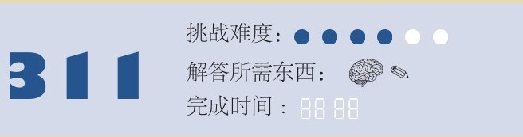
两个女儿的问题
假设一位母亲怀上了双胞胎，她想知道双胞胎都是女孩的概率。
1.她生下两个女孩的概率有多大呢？
2.双胞胎中有一个是女孩的概率有多大呢？
3.已知双胞胎中有一个是女孩，那么双胞胎全是女孩的概率是多少呢？
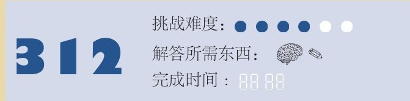
三个孩子的家庭
在一个有三个孩子的家庭里，至少有一个女孩的概率是多少呢？
有八个孩子的两个家庭
有两个家庭，其中一个家庭育有八个男孩，另一个家庭育有八个女孩。因为生男生女的概率是相同的，你认为在这样规模的家庭里，生下四个男孩与四个女孩的概率会不会更大一些呢？一个家庭生下八个女孩的概率与一个家庭生下四男四女的概率相比，哪个更大一些呢？
星期二出生的男孩——2010年
在2010年亚特兰大举办的加德纳大会上，非常有创造力的谜题设计师加里·弗许发表了一场演说，他在演说里讲到了下面三句话：
“我有两个孩子，
其中一个男孩是在星期二出生的。
那么我这两个孩子都是男孩的概率是多少呢？”
加里如往常那样面无表情地接着往下说：
“你们首先想到的可能是，这个问题与在星期二出生有什么关系呢？
好吧，事实上，这与其中一个男孩在星期二出生有着莫大的关系。”
接着，他从讲台上走了下来。
在这次会议之后，“星期二出生的男孩”这个问题在世界各地的博客上被广泛讨论，很多人都对这个争议性的话题发表了看法。
其实，这个游戏是马丁·加德纳的“男孩或女孩的悖论”系列游戏的一个衍生版本，这些内容在本书中介绍过了（可以参考本章前面的内容）。
问题的关键就在于如何正确地解读加里所提出的问题。让我们先捋清其中相关的一些问题。
首先，我们先将星期二的问题抛在脑后，那么这个问题就可以解读为：
在所有已经有了一个男孩以及另一个孩子的家庭里，这些家庭拥有两个男孩的概率是多少呢？下面，我们列举一下有两个孩子的四种可能性（如图）：
在这四种可能性中，一种就是两个男孩的情况，而这样的概率其实为三分之一（因为两个女孩的情况已经被排除掉了）。
那么，在大家争执告一段落之后，加里又说了什么呢？
“肯定有一种基于选择的论点。
我的解法是基于集合论的。
首先将有两个孩子的家庭视为一个集合。
然后再研究其中的子集：那些有两个男孩的家庭。
接着，我们再去研究其中的一个子集：有一个男孩是在星期二出生的家庭。
如果你按照这样的方式看待这个问题的话，那么正确的答案会是13/27。
但是，如果你在选择孩子时考虑了其他因素，并由此选定集合，那么答案就会不一样。
诚然，这是一个非常棘手与有争议的谜题。”
我非常喜欢加里提出的这个问题以及这个问题所引发的争议。在下一页的内容里，我将会尝试按照加里的解释，找到他这个问题的答案。
方法一
请注意：加里并没有说只有一个男孩是在星期二出生的。显然，他的意思是“至少有一个”。
孩子拥有特定性别与生日的情况，一共会有7+7+7+6=27种，在这些组合当中，有13种组合是属于两个男孩的情况。因此，这个问题的答案就是13/27，这与原先的1/3有着较大的差别。
方法二
加里提出的“星期二出生的男孩”的问题还有一种视觉计算方法，是《科学新闻杂志》的比尔·卡斯尔曼提出来的。
一共有27种可能的家庭组合，如图所示，有两个男孩的可能性是13种，因此，这个概率为13/27。
滑块游戏
滑块游戏通常要求选手沿着特定的路线（一般是在一个棋盘上）滑动小方块，从而拼出某种图形。
正如我们在第5章所看到的，15个方块的游戏是滑块游戏最古老的形式。它是诺伊斯·查普曼发明的，并在1880年流行一时。与其他的“遍历”游戏不同的是，滑块游戏禁止将任何小方块从棋盘上拿起来。这样的游戏属性将滑块游戏与重新安排滑块的游戏区分开来。因此，在二维空间内的每一步移动以及所走的路线，都受限于棋盘的范围，这对于解答滑块游戏来说是非常重要的。就其本质来说，滑块游戏是在二维平面上进行的，即便滑块可能是用机械联动件做成的。现在，这种游戏已经有了电子版（即电子游戏），可以在网上玩了。
简单的滑块游戏——2011年
2011年12月，《经济学人》杂志提出了这样一个问题：最难解答的简单滑块游戏是什么呢？
两位发明家走在了发明最难解答的简单滑块游戏的前列，他们就是詹姆斯·斯蒂芬斯与奥斯卡·冯·德芬特。
根据艾德·佩格的说法，詹姆斯·斯蒂芬斯的简单滑块游戏，是以奥斯卡·冯·德芬特的原型为基础的，并认为这样的设计称得上是“最难解答的滑块游戏”。这个游戏的目的就是将红色的拼块移动到左上角。这个游戏能够在18步后完成。
奥斯卡的扭曲魔方游戏
从20世纪80年代开始，受鲁比克魔方巨大成功的鼓舞，一种全新类型的机器魔方应运而生了，无论是数量还是种类都在迅速增加。荷兰设计师奥斯卡·冯·德芬特就是这类魔方背后的天才发明家。他发明并制造的扭曲魔方以及其他类型的魔方达数百种。
奥斯卡最新的一个发明就是“飞越巅峰”魔方。这是一个扭曲的17×17×17的机械魔方，在2011年的纽约魔方展览会上首次亮相。它是在Shapeways.com网站3D打印出来的，由1539块单独的塑胶块组成。与大众市场的鲁比克魔方相比，它称得上一个不折不扣的巨人。
德芬特通过学习成为一名电学工程师。2010年，他设计出了“飞越巅峰”魔方，整个研发过程用时60小时。在Shapeways公司对游戏的每个部件进行3D打印之后，德芬特需要对打印出来的部件分门别类进行整理，然后挨个进行着色，最后再将这些部分组装起来，整个过程是手工完成的。要想最后完成这些步骤，还需要额外花费15小时。为了让更多人能够了解这个游戏的创作过程，德芬特在自己的Youtube频道上让人一窥这一魔方的内部，同时还展示了其他许多由他发明的魔方。
奥斯卡·冯·德芬特的扭曲魔方
“当我第一次听到来自希腊的帕纳约蒂斯·贝尔德斯发明的7×7×7、9×9×9与11×11×11的鲁比克魔方与来自中国的李发明的12×12×12的鲁比克魔方创造了一项又一项世界纪录时，当时我就想自己也要创造出一项世界纪录来。”德芬特这样说，“在得到我的好朋友克劳斯·温尼克提供的赞助与魔方原型之后，我开始了魔方的设计与测验工作。经过三次尝试，我最终在Shapeways公司成功地进行了3D打印。
上述17×17×17魔方绝对不是他事业的最高峰。最近，他通过MF8制作出了由20个三角形做成的可以转动各面的正多面体。
组合魔方
组合魔方又被称为顺序移动魔方，由许多可以旋转并形成不同组合的零件组装而成。一开始是随机设置的，拼回预先设定的组合就算成功。一般情况下，将相同颜色的拼一组或按顺序拼起来就算成功。
这类魔方中最著名的一款就是鲁比克魔方。它有六个面，每个面都可以独立转动，每个面颜色各不相同，每个面都由相同颜色的九个部分组成。
随意转动魔方，使每种色块都随机分布在不同的面上，当六个面中每个面再次拼回开始的一种颜色时，就算挑战成功。
魔方的各个部件的组合能如何改变是由魔方的构成方式决定的，这就将可能的组合方式限定在一定范围内。就拿鲁比克魔方来说，可以在立方体的各个面上随机粘贴彩色贴纸，来得到大量的组合方式，实际上，旋转魔方时会发现很多组合是不可能实现的。
安东尼奥·佩迪克夫（AntonioPeticov，1946—）
安东尼奥·佩迪克夫是一位巴西数学艺术家，生于1946年。他创造出的艺术品凝结着技术与审美的元素，呈现出多样化的风格。他通过作品敞开了一个多彩的世界，让人们感受到机械世界潜藏的微妙之处，给人带来灵感。
数学与艺术——2012年
从当代视角来看，数学与艺术看似是两个不相干的领域，不过，不少视觉艺术家都会让数学成为他们作品的一个焦点。数学艺术家往往会广泛地运用数学知识去进行多主题的创作，其中就包括多面体、镶嵌、不可能图形、默比乌斯带、扭曲或是不寻常的视觉系统以及分形学等。
但是，数学艺术的领域要比绝大多数人所想的还要广阔与多元。现在越来越多的当代艺术家都将数学——从斐波那契数到圆周率，再到默比乌斯带——视为他们创作的灵感。安东尼奥·佩迪克夫就是这样一位艺术家。
硕士学位
第一印象
泰贾·克雷萨克（Teja Krasek）
泰贾·克雷萨克在卢布尔雅那的视觉艺术学院获得了绘画学士学位，后来成了自由职业的艺术家，在斯洛文尼亚工作与生活。她在创作理论与实践方面都特别注重对称性与数学的概念，并且将其视为艺术与科学结合的一种理念。
克雷萨克的作品专注于融合艺术、科学、数学与技术。她还将现代电脑科技与古典的绘画技术结合起来。
生物起源
斯洛文尼亚艺术家泰贾·克雷萨克探索艺术、科学与数学之间的分形边界。
她这样说道：“艺术与数学是紧密融合在一起的，它们的结合创造出了深邃且难以预期的意象与情感，使我们恍如超越时空。”
泰贾·克雷萨克，公元3000年的地球
泰贾·克雷萨克，万圣节的花托